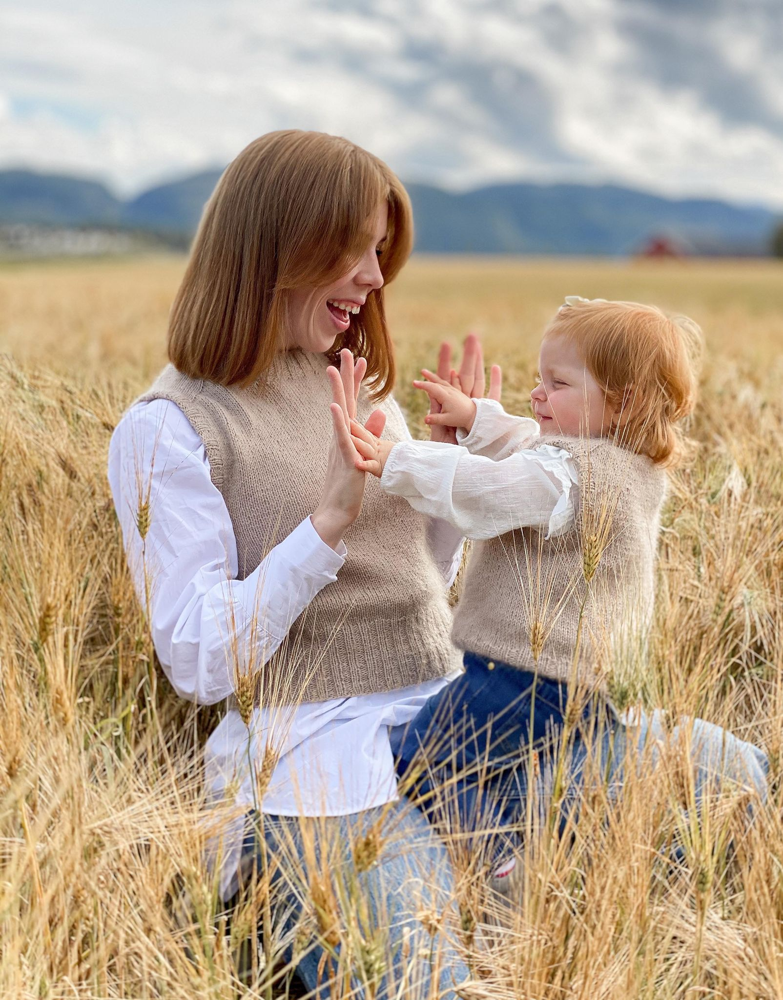

Alexander Brandhaug, Eirik Andre Nordbø, Ida Matre, Tim Matras, Sofie Rønningen Kleven
DATO HER
Klient
Vår klient er Monika, samboeren til Alexander. Hun er en hobby-strikker som ønsker en plattform for å dele
strikkeprosjekter. Hun ønsker i tillegg å kunne selge noe av det hun strikker.

Nettsidens hensikt og mål
Nettsiden skal fungere som et kreativt utløp for klienten hvor hun kan skrive om hennes nyeste strikkeverk
gjennom en blogg. I
tillegg skal nettsiden fungere som inspirasjon til andre
strikkeglade mennesker. Dermed blir et naturlig mål for nettsiden å kunne fremheve bilder og hennes
kunstverk.
For at besøkende skal bedre forstå klientens strikkekunst burde nettsiden informere kort om klientens liv og
strikkebakgrunn. Nettsiden skal også fungere som en sekundærinntekt for klienten gjennom en side hvor
besøkende kan bestille
strikkede artikler.
Målgruppe
Klienten ønsker å nå ut til alle som ønsker å se og å bli inspirert av Monikas prosjekter, og nettsidens
målgruppe er derfor bred.
De som besøker nettsiden kan være alt ifra venner som er unge voksne til familie som er eldre.
Målgruppen inkluderer også alt fra nybegynnere innen strikking som ønsker å lære til erfarne strikkere som
ønsker å finne inspirasjon.
I tillegg vil målgruppen inkludere folk som ønsker å kjøpe det klienten strikker, noe som i hovedsak vil
være barneforeldre, besteforeldre eller andre som ønsker å kjøpe hjemmestrikkede barneklær.
Nettsidens innhold og organisering
Forside:
Her skal brukeren raskt få et inntrykk av hva han/hun finner på siden. Det skal også komme frem hvem
klienten er og hva klienten holder på med.
Bestilling:
Klienten ønsker å tilby strikkede produkter som er ferdiglaget (nettbutikk), men brukeren skal også
kunne ta
kontakt for å få produkter strikket på mål.
Derfor ønsker klienten her at produktene skal komme godt frem og at brukeren kan legge til en eller
flere
produkter i en handlevogn. Siden vi ikke skal koble nettsiden til en database,
kommer brukeren kun få en tilbakemelding om at bestillingen er sendt (uten at noe annet faktisk skjer).
Bilder av tidligere arbeid:
Kunden ønsker å vise frem sine egne strikkeferdigheter og gi brukeren inspirasjon. Her vil kunden ha
en bildekarusell.
Blogg:
Her skal klienten kunne skrive strikkeoppskrifter og lignende for å gi inspirasjon til brukeren.
Om meg:
Her vil klienten kunne skrive om bakgrunnen sin innen strikking og kunne vise til tidligere prosjekter
osv.
Kontakt:
Kontakt-delen skal ikke være en egen nettside, men i en footer på alle de andre nettsidene. Brukeren
skal
kunne få til gang til klientens sosiale medier og kunne ta kontakt pr. e-post.
Spesifikke preferanser
Klienten ønsker en bildekarusell som fremhever strikkekunsten hennes.
Det er ønskelig at den ordinære musepekeren erstattes med to strikkepinner på nettsiden hennes.
...
Final Location of the Website - boks nr 6
Tekniske utfordringer
Bilder: Her er det viktig at vi velger best mulig bildeformat og begrenser oppløsning på
bilder slik at siden ikke blir treg. Det er også ønskelig å vise bildene i en bildekarusell.
Bestillingsfunksjon: Klienten ønsker en side hvor det er mulig å legge inn bestillinger på
strikkede
artikler. Dette kan løses enten med en handlekurv-funksjon eller et spørrskjema.